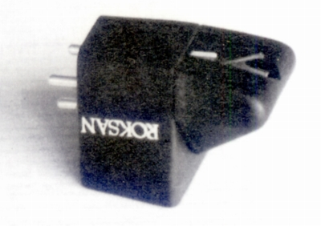

Corus/MM

■価格 40,000円■発電方式 MM型■出力電圧 6.5mV(1kHz 5cm/sec)■針圧 1.8〜2.5g（最適 1.9g)■再生周波数帯域 ■チャンネルセパレーション ■チャンネルバランス ■コンプライアンス ■直流抵抗 ■負荷抵抗 47kΩ■内部インピーダンス ■針先 ガイガー�U■自重 6.5g■交換針 ■発売 1995年■販売終了 年頃■備考 価格は1999年頃のもの
ロクサンのインデックスへ